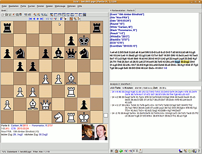
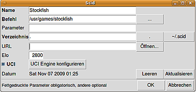
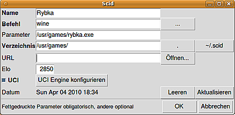

Scid
Dieser Artikel wurde für die folgenden Ubuntu-Versionen getestet:
Ubuntu 16.04 Xenial Xerus
Ubuntu 14.04 Trusty Tahr
Zum Verständnis dieses Artikels sind folgende Seiten hilfreich:
Scid  (gesprochen "SKID") ist ein Schachdatenbank-Programm mit einem Funktionsumfang ähnlich der Software Chessbase der Firma Chessbase GmbH. Man kann damit Schachdatenbanken verwalten, Suchen nach verschiedensten Kriterien durchführen, graphische Elo-Trends ablesen sowie druckfertige Berichte über Spieler sowie Eröffnungen erstellen. Des weiteren kann man über FICS online Schach spielen sowie Schachengines entweder zu Analysezwecken oder als Spielpartner einbinden.
(gesprochen "SKID") ist ein Schachdatenbank-Programm mit einem Funktionsumfang ähnlich der Software Chessbase der Firma Chessbase GmbH. Man kann damit Schachdatenbanken verwalten, Suchen nach verschiedensten Kriterien durchführen, graphische Elo-Trends ablesen sowie druckfertige Berichte über Spieler sowie Eröffnungen erstellen. Des weiteren kann man über FICS online Schach spielen sowie Schachengines entweder zu Analysezwecken oder als Spielpartner einbinden.
Scid verwendet eine eigene Datenbanktechnik, beherrscht aber auch den Ex- und Import im "portable game notation"-Format (.pgn), wodurch Scid mit jedem anderen Schachprogramm kompatibel wird. Es sei an dieser Stelle der Hinweis erlaubt, das Scid sich eher an den professionellen Benutzer richtet, wobei jeder selbst entscheiden soll, ob das für ihn zutrifft. Der einzige Schwachpunkt von Scid dürfte das eher altbackene Aussehen des Programmes sein, da es ohne modernen Fenstermanager auskommt und die Entwickler sich aus technischen Gründen dagegen aussprechen.
Installation¶
Aus den Paketquellen¶
 Folgendes Paket muss installiert[1] werden:
scid (universe)
Damit wird Stand 08/2014 eine alte Version Scid 4.3, Stand 02/2011 installiert. In Xenial ist die Version 4.5.1 in den Paketquellen enthalten (Stand 04/2016).
Selbst kompilieren¶
Die neueste Version, Stand 10/2016 ist dies Scid 4.6.4 aus 08/2016, kann über diesen Weg erhalten werden. Eine Anleitung dazu findet sich unter CompileScid , die wichtigsten Punkte sind hier zusammengefasst.
Falls noch nicht vorhanden Tcl/Tk 8.6 installieren:
tk8.6
tcl8.6-dev
 mit apturl
mit apturl
Paketliste zum Kopieren:
sudo apt-get install tk8.6 tcl8.6-dev
sudo aptitude install tk8.6 tcl8.6-dev
Die scid-zip-Datei herunterladen, entpacken und erstellen [2]
Benutzung¶
Programmaufruf¶
Scid erstellt keinen Eintrag im Startmenü; gestartet wird es entweder durch den Befehl scid[3] oder durch Hinzufügen des Programms zum Startmenü[4]. Im so gestarteten Programm kann nun unter "Options -> Language" die gewünschte Sprache eingestellt werden.
Datenbank¶
Um mit einer Datenbanksoftware arbeiten zu können, bedarf es einer Datenbank. Proprietäre Formate wie .cbh-Dateien kann Scid nicht lesen, aber diese lassen sich mit der proprietären Software desselben Herstellers ins .pgn-Format übertragen, mit denen man dann in Scid arbeiten kann. Es empfiehlt sich aber aus Geschwindigkeitsgründen noch eine Umwandlung vom .pgn- ins Scid-eigene .sg4-Format, speziell bei größeren Datenbanken.
Die Umwandlung vom pgn- ins Scid-Format kann einerseits über die grafische Oberfläche mittels "Fenster -> Datenbank-Umschalter" und Auswahl der .pgn-Datenbank sowie des Clipboards erfolgen (man zieht die Partien von der Datenbank ins Clipboard oder in eine bereits erstellte .sg4-Datenbank) oder mit dem Aufruf von pgnscid DATEINAME im Terminal[3].
Datenquellen für Datenbanken im .pgn-Format sind unter den Links zu Schachsoftware vorhanden.
Elo-Verlauf und Schreibkorrektur¶
In den Datenbanken ist immer nur die Elo-Zahl zum Zeitpunkt des Matches gespeichert. Wer darüber hinaus den Elo-Verlauf eines Spielers über die Jahre hinweg verfolgen will, muss diese Informationen nachladen. Desweiteren sind Namen von Spielern in den verschiedenen Datenbanken oftmals leicht unterschiedlich geschrieben (Lateinisierung von Kyrillischen Namen), Scid bietet hierfür eine Lösung an.
Man geht am am besten auf die Scid Projektseite und findet dort unter "Downloads" zwei verschiedene .ssp-Dateien. Dabei ist zu beachten, das die ratings_XXXX_XX_XX.ssp-Datei die Schreibkorrektur bereits eingebaut hat, daher größer ist. Aktuelle Versionen werden immer auf der Entwicklerseite verlinkt. Diese Datei sollte man zuerst herunterladen und entpacken, danach Scid starten, und unter "Optionen -> Schreibkorrekturdatei laden" die betreffende Datei laden. Wenn man danach unter "Optionen -> Optionen speichern" die veränderte Option speichert, wird die Datei bei jedem Programmstart automatisch geladen.
Engines¶
Scid kommt von Haus aus mit Crafty, einer guten Open-Source-Engine. Wer dennoch stärkere Engines einbinden will, der sei einerseits auf Stockfish, der momentan (Februar 2013) stärksten Open-Source Engine bzw. auf Rybka 4.1, einer kommerziellen Engine auf Wine-Basis verwiesen.
Stockfish¶
 Folgendes Paket muss installiert [1] werden:
stockfish (universe)
Neueste Stockfish-Versionen lassen sich als Paket unter Links finden, in beiden Fällen wird die Engine unter /usr/games installiert. Die Einbindung in Scid erfolgt über "Werkzeuge -> Analyse-Engine"
Rybka¶
 Rybka-Versionen kann man mittels Wine einbinden, wozu folgendes Paket installiert[1] werden muss:
wine (universe)
Die Einbindung erfolgt über "Werkzeuge -> Analyse-Engine".
In Scid muss der Pfad der Engine als Parameter angegeben werden, während wine den eigentlichen Befehl darstellt. Im nebenstehenden Bild ist ein Beispiel zu sehen. Achtung, die .exe Dateien dürfen keine Leerzeichen enthalten und müssen normalerweise vorher umbenannt werden.
Andere Engines¶
Weitere Engines sind im Artikel Schach beschrieben. Die Einrichtung der Engines verläuft analog zu der von Stockfish.
Analyse mittels Engine¶
Es gibt verschiedene Analyse-Möglichkeiten. Die einfachste stellt die dar, eine Partie durchzuspielen und die Engine daneben laufen zu lassen. Eine andere - sehr elegante - Möglichkeit, seine eigenen oder die Partien anderer im Nachhinein vom Computer analysieren zu lassen, stellt die Funktion "Automatisch kommentieren" im Engine-Fenster dar, die eigentlich selbsterklärend ist. Diese Funktion bieten aber nicht alle Engines.
Datenbanksuche¶
Scid lässt hier keine Wünsche offen, da praktisch nach allen relevanten Daten gefiltert und auch sämtliche Suchanfragen miteinander verknüpft werden können. Eine vollständige Übersicht der Möglichkeiten würde den Rahmen des Wikis sprengen. An dieser Stelle sei auf ein Video-Tutorial verwiesen, das einen guten Einblick in die Fähigkeiten des Programms erlaubt.
Anbindung an FICS¶
Seit der Version 4.0 kann man sich mittels Scid mit FICS (Free Internet Chess Server) verbinden, womit man unter anderem Live-Übertragungen verfolgen und gegen menschliche Spieler Schach spielen kann.
Timeseal¶
Um sogenannte Verbindungs-Lags bei der Zeitnahme zu berücksichtigen, dient das Programm timeseal, welches von FICS  als Linux-Version heruntergeladen werden kann.
Auf FICS ist timeseal leider nicht mehr zu finden, man kann es aber per
als Linux-Version heruntergeladen werden kann.
Auf FICS ist timeseal leider nicht mehr zu finden, man kann es aber per
wget https://sourceforge.net/projects/scidvspc/files/support%20files/timeseal.Linux-i386.gz
bekommen und entpacken.
Hinweis!
Fremdsoftware kann das System gefährden.
Das Programm macht man ausführbar [4] und gibt in der FICS-Konfiguration von Scid den Speicherort an. Für Blitzpartien sollte man kontrollieren, ob timeseal korrekt verwendet wird. Dazu loggt man sich auf FICS ein, gibt finger ins FICS-Terminal ein und kontrolliert die timeseal-Zeile; timeseal on bedeutet, das timeseal korrekt verwendet wird.
Links¶
Chess Videos
- Video-Tutorial 1 (Dauer 38min, Datenvolumen etwa 50MB)Chess Videos
- Video-Tutorial 2 (Dauer 30min, Datenvolumen etwa 50MB)Schach
 Übersichtsartikel
Übersichtsartikel
- Erstellt mit Inyoka
-
 2004 – 2017 ubuntuusers.de • Einige Rechte vorbehalten
2004 – 2017 ubuntuusers.de • Einige Rechte vorbehalten
Lizenz • Kontakt • Datenschutz • Impressum • Serverstatus -
Serverhousing gespendet von